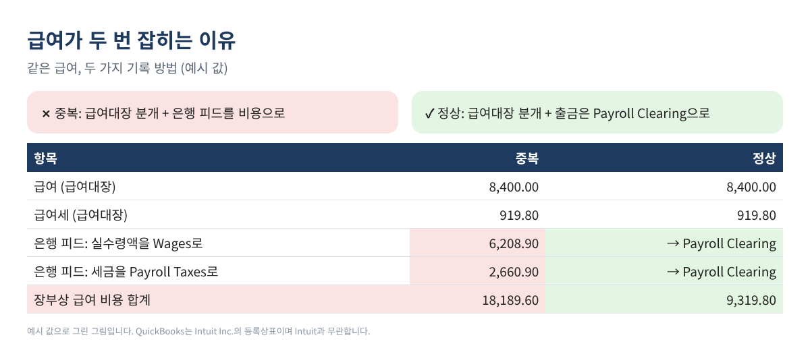
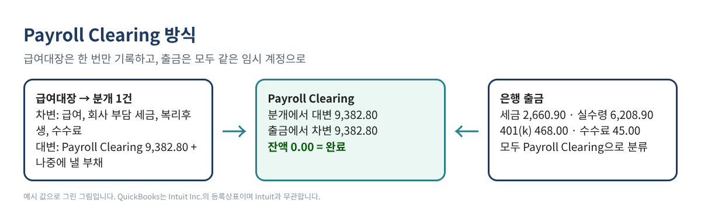
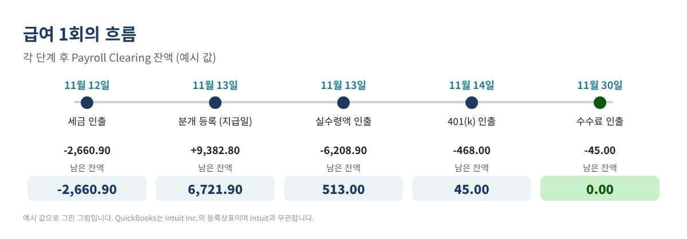
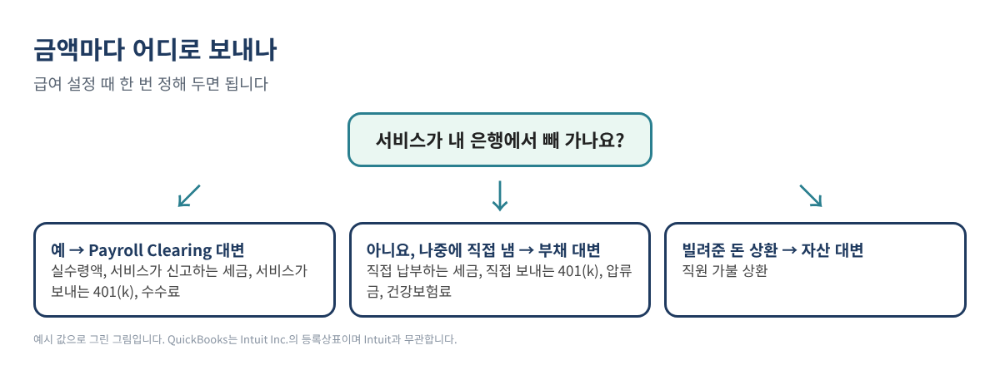

Gusto, ADP, Paychex 같은 외부 급여 서비스를 쓰고 장부는 QuickBooks로 하신다면, 급여일마다 은행에 출금이 서너 건 찍힙니다. 실수령액, 세금, 경우에 따라 401(k)와 수수료까지요. 그런데 급여대장에는 총급여, 원천징수 세금, 회사 부담 세금, 공제가 나옵니다. 이 둘을 맞추다 보면 급여가 두 번 잡히거나, 장부의 급여가 신고된 금액과 맞지 않게 됩니다.
QuickBooks 커뮤니티에 계속 올라오는 질문인데, 답은 대개 "은행 거래를 제외하세요" 아니면 "회계사에게 물어보세요"에서 끝납니다. 이 글에서는 Desktop이든 Online이든 직접 따라 할 수 있는 방법을 처음부터 끝까지 정리했습니다. 필요한 것은 계정 하나와, 급여 1회마다 분개 1건입니다.
이런 분께: 급여는 외부 서비스(또는 PEO)가 처리하고, QuickBooks Desktop·Online 장부는 직접 기록하는 사장님과 북키퍼.
같은 급여를 두 곳에서 기록하려고 하기 때문입니다. 급여대장(또는 서비스가 주는 분개 보고서)은 전체 그림입니다. 총급여와 회사 부담 세금은 비용이고, 원천징수한 금액은 남을 위해 잠시 보관하는 돈입니다. 반면 은행 피드는 빠져나간 현금만 봅니다.
급여대장을 분개로 넣고, 동시에 은행 피드의 출금을 Wages나 Payroll Taxes로 추가하면 비용이 두 번 잡힙니다. 반대로 은행 출금만 넣으면 장부의 급여는 총급여가 아니라 실수령액이 되고, 세금은 한 덩어리로 섞입니다. 어느 쪽도 서비스가 낸 급여세 신고와 맞지 않습니다.

Payroll Clearing이라는 계정(종류: Other Current Liability)을 만들고 규칙 하나만 지키면 됩니다. 급여대장 분개에서는 서비스가 은행에서 빼 가는 금액 전부를 Payroll Clearing 대변으로 잡고, 은행 피드의 급여 출금은 모두 Payroll Clearing으로 분류합니다. 그 급여의 출금이 다 들어오면 잔액은 0으로 돌아옵니다.

| 계정 | 종류 | 용도 |
|---|---|---|
| Payroll Expenses:Wages | Expense | 총급여 |
| Payroll Expenses:Payroll Taxes | Expense | 회사 부담 사회보장세·메디케어·FUTA·SUTA |
| Payroll Expenses:Benefits | Expense | 회사 401(k) 매칭, 회사 부담 건강보험 |
| Payroll Service Fees | Expense | 서비스 수수료 |
| Payroll Clearing | Other Current Liability | 서비스가 은행에서 빼 가는 모든 금액 |
| Payroll Liabilities (하위 계정) | Other Current Liability | 나중에 직접 낼 세금·401(k)·압류금 |
표 1. 추천 계정. 이미 쓰는 계정 이름이 있으면 그대로 쓰셔도 됩니다.
Desktop: Lists > Chart of Accounts에서 Account > New. Online: 계정과목표(Chart of accounts, 새 화면에서는 Accounting 아래)를 열고 New를 누른 뒤 계정 종류와 가장 가까운 세부 유형을 고릅니다.
해당 지급일의 급여대장을 열고 합계 줄을 봅니다. 총급여, 직원 원천징수 세금, 직원 공제, 회사 부담 세금, 그리고 이번 급여와 함께 빠지는 수수료가 필요합니다. 아래 예시로 끝까지 따라가 보겠습니다.
| 항목 (예시 값) | 금액 |
|---|---|
| 총급여 | 8,400.00 |
| 직원 원천징수 (연방 812.00, 사회보장세 520.80, 메디케어 121.80, 주 286.50) | 1,741.10 |
| 직원 공제 (401(k) 300.00, 건강보험 150.00) | 450.00 |
| 회사 부담 세금 (사회보장세 520.80, 메디케어 121.80, FUTA 50.40, SUTA 226.80) | 919.80 |
| 회사 401(k) 매칭 | 168.00 |
| 서비스 수수료 | 45.00 |
표 2. 급여대장 합계 예시. 모든 숫자는 가상의 값입니다.
엑셀이나 구글 시트에 합계를 넣고 수식 세 개로 계산합니다. B2 총급여, B3 직원 세금, B4 공제, B5 경비 환급, B6 회사 세금, B7 회사 부담금, B8 수수료, B9 서비스가 보내는 401(k) 금액이라고 하면:
=B2-B3-B4+B5 → 6,208.90=(B2-B3-B4+B5)+B8+B3+B6+B9 → 9,382.80=B2+B6+B7+B5+B8가 대변 합계(Clearing + 부채로 남는 금액, 여기서는 건강보험 공제 150.00)와 같아야 합니다.| 계정 | 차변 | 대변 |
|---|---|---|
| Payroll Expenses:Wages | 8,400.00 | |
| Payroll Expenses:Payroll Taxes | 919.80 | |
| Payroll Expenses:Benefits | 168.00 | |
| Payroll Service Fees | 45.00 | |
| Payroll Clearing | 9,382.80 | |
| Payroll Liabilities:Health | 150.00 | |
| 합계 | 9,532.80 | 9,532.80 |
표 3. 예시 급여의 분개. 예시 값.
직원과 회사의 401(k)(300.00 + 168.00)가 Clearing 대변 안에 들어 있는 것은, 이 예시에서 서비스가 은행에서 직접 빼 가기 때문입니다. 건강보험 공제는 보험사에 직접 내므로 부채로 잡았습니다.
+ New > Journal entry에서 날짜를 지급일로 하고 줄을 입력합니다. 입력이 번거로우면 Intuit 도움말에 나온 CSV 가져오기를 씁니다: 톱니바퀴(Settings) > Import data > Journal entries. 열은 Journal No., Journal Date, Account Name, Debits, Credits, Description입니다. 계정은 미리 있어야 하고, 계정 번호를 쓰면 가져오기 전에 꺼야 합니다.
Company > Make General Journal Entries를 씁니다. 파일로 가져오려면 File > Utilities > Import > IIF Files(먼저 백업, 단일 사용자 모드). IIF는 중복을 경고하지 않으니 급여 1회당 한 번만 가져오세요.
이제 은행 쪽입니다. QuickBooks Online에서는 은행 거래 화면의 For review 목록(새 화면에서는 Pending)에서 급여 출금을 하나씩 열어 Payroll Clearing으로 분류합니다. Desktop에서는 Bank Feeds Center에서 추가하거나, 당좌 계정 레지스터에 Payroll Clearing 계정으로 입력합니다.

마지막 출금 후 Payroll Clearing 리포트를 보세요. 잔액이 0이면 빠진 것도 중복된 것도 없습니다. 이미 은행 피드가 급여를 Wages로 추가했다면 Categorized(또는 Posted) 목록에서 Undo한 뒤 Payroll Clearing으로 다시 분류합니다.
서비스가 실수령액만 처리하고 세금은 사장님이 직접 내는 경우도 있습니다. 이때 세금은 Clearing 대변에 넣지 않고 Payroll Liabilities 대변으로 잡습니다. 나중에 세금을 낼 때 같은 부채 계정으로 분류하면 0으로 돌아옵니다. 직접 보내는 401(k), 압류금, 건강보험료도 같은 방식입니다.

급여 1회마다 총급여, 연방 소득세, 사회보장세, 메디케어(직원·회사분 합계)를 한 줄씩 기록해 두세요. 분기 말에 이 합계를 서비스의 분기 보고서(서비스가 낸 Form 941 등)와 비교합니다. 차이가 있으면 거의 항상 급여 한 건이 빠졌거나, 두 번 들어갔거나, 기록한 뒤에 수정된 경우입니다.
할 수는 있지만, 그러면 돈이 실제로 빠져나갔다는 기록이 없어 은행 대조가 어려워집니다. Payroll Clearing으로 분류하면 현금도 기록되고 빠진 것도 바로 보입니다.
연동이 급여를 자동으로 기록해 준다면, 손으로 더 넣기 전에 무엇을 어떻게 기록하는지, 은행 출금은 어떻게 처리하는지 먼저 확인하세요. 이 방법은 직접 기록하는 급여용이며, 연동 결과를 검산하는 데도 좋습니다.
급여가 높은 직원에게는 추가 메디케어세(Additional Medicare Tax)가 원천징수되는데, 회사는 이 부분을 같이 내지 않습니다. 사회보장세는 보통 양쪽이 같습니다.
아니요. 잠시 거쳐 가는 계정이므로 Other Current Liability(또는 은행형 정리 계정)로 만들어야 손익계산서에 나타나지 않습니다.
시트를 직접 만들기 번거로우시면, 이 수식과 CSV·IIF 가져오기 행, 은행 매칭 탭, 급여 기록표를 담은 영한 엑셀(Outside Payroll Journal Entry & Bank Match Builder)을 Etsy와 Gumroad에서 구하실 수 있습니다.
안내: 이 글은 교육용 정보이며 세무·법률·급여 자문이 아닙니다. 급여 관련 규정은 상황과 주(state)에 따라 다르므로 구체적인 사항은 자격 있는 세무 전문가와 상의하세요. QuickBooks 메뉴 이름은 버전에 따라 다를 수 있습니다. QuickBooks는 Intuit Inc.의 등록상표이며, 이 글은 Intuit과 제휴하거나 Intuit의 보증을 받지 않았습니다.